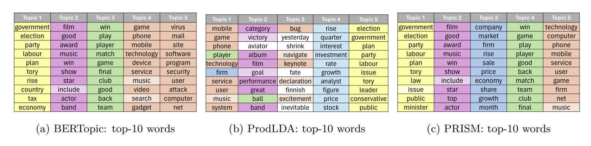
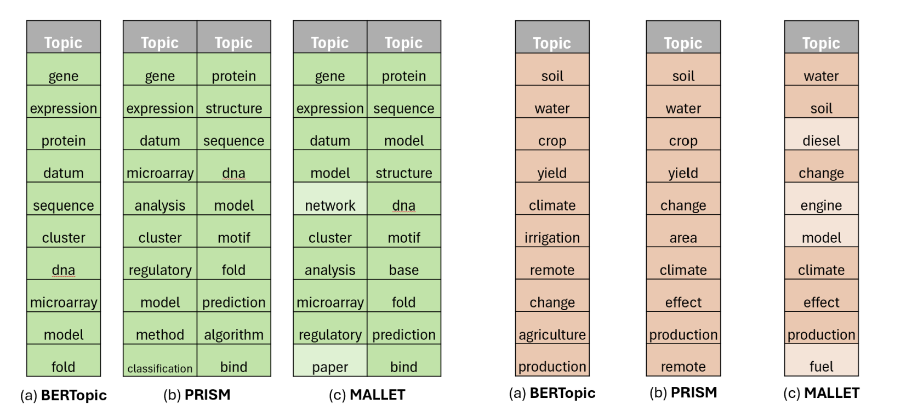
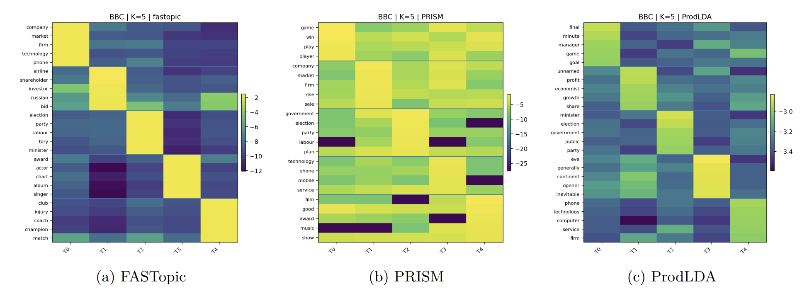
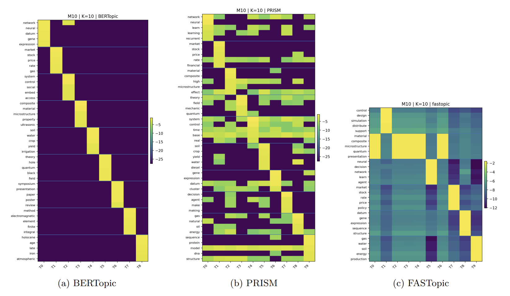

Motivated by domains like biology, where data is often limited, noisy, and highly specialized. PRISM addresses the lack of external supervision by learning an informative prior directly from corpus-intrinsic statistics, enabling meaningful structure extraction when data is scarce.
Abstract
Topic modeling seeks to uncover latent semantic structure in text, with LDA providing a foundational probabilistic framework. While many recent methods incorporate external knowledge, such reliance can limit applicability in emerging or underexplored domains. We introduce PRISM, a corpus-intrinsic method that derives a Dirichlet parameter from word co-occurrence statistics to initialize LDA without altering its generative process.
Overview
PRISM is a novel framework for Latent Dirichlet Allocation (LDA) initialization. Unlike existing methods that rely on external knowledge or complex neural architectures, PRISM extracts semantic structure directly from the corpus itself. By bridging the gap between word co-occurrence statistics and probabilistic topic modeling, PRISM provides a robust starting point for LDA, ensuring high coherence and interpretability.

Seeing the Unseen: The PRISM Perspective
PRISM is built upon three foundational principles that ensure interpretable and robust topic modeling. These pillars structure the design of our method and guide the research that follows.
Motivation
Method
PRISM extracts semantic structure through word co-occurrence, embeddings, and soft clustering. It converts this into a topic-aware prior to initialize LDA. This leads to cleaner, more coherent topics without altering the original generative model or requiring external training.
Insights
By leveraging internal co-occurrence patterns, PRISM discovers highly interpretable topics. This is especially vital for biological research, where improved latent topics support the discovery of gene programs or biological processes in sparse, domain-specific datasets.
Experimental Results
1. Qualitative Topic Coherence
PRISM recovers more semantically consistent word groups compared to BERTopic and ProdLDA.

Figure 1: Comparison of top-10 words across different models.
2. Specialized Domain Performance

Figure 2: Top-10 words for Biology and Climate topics.
Heatmap Analysis
The heatmaps visualize the probability mass distribution across topics (columns) and words (rows). PRISM (b) exhibits concentrated relevance scores and lower noise, demonstrating better topic separation compared to the uniform or highly chaotic distributions in other models.

BBC Dataset (K=5)

M10 Dataset (K=10)
Conclusion
PRISM shows that informative topic priors can be learned directly from corpus-intrinsic structure, leading to more coherent, organized, and interpretable topics. By strengthening LDA with a data-driven prior rather than changing its core model, PRISM provides a simple and principled way to improve topic discovery. Its corpus-intrinsic nature also makes it especially promising for specialized fields such as biology, where data is limited and external resources may be unavailable or poorly matched.
Citation
@article{
ishon2026prism,
title={PRISM}: {PRI}or from corpus Statistics for topic Modeling},
author={Tal Ishon and Yoav Goldberg and Uri Shaham},
journal={Transactions on Machine Learning Research},
issn={2835-8856},
year={2026},
url={https://openreview.net/forum?id=454v3Xbtza},
note={Featured Certification}